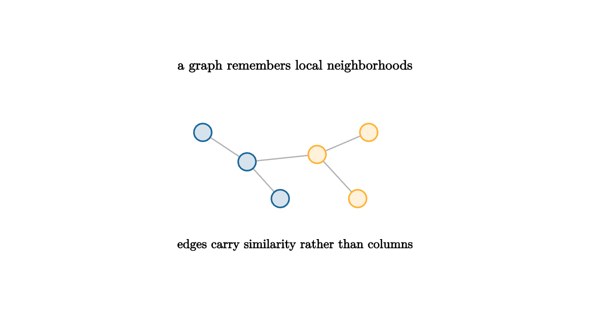

A spreadsheet records objects as rows. A graph records relationships. If two songs sound similar, connect them. If two documents share many words, connect them. If two patients have similar measurements, connect them. The graph view asks a different question from a table: who is near whom, and what can move through those neighborhoods?
The first construction is often a nearest-neighbor graph. For each point, draw edges to its $k$ closest points. The edge can be unweighted, or it can carry a similarity such as
Large weights mean strong local similarity. Small weights mean weak similarity.

source
let soft = |col, amount| lerp(WHITE, col, amount)
mesh graph = [
center{1.35u} Text("a graph remembers local neighborhoods", 0.66),
stroke{LIGHT_GRAY, 1.6} Line(1.25l + 0.45u, 0.65l + 0.05u),
stroke{LIGHT_GRAY, 1.6} Line(0.65l + 0.05u, 0.2l + 0.45d),
stroke{LIGHT_GRAY, 1.6} Line(0.65l + 0.05u, 0.3r + 0.15u),
stroke{LIGHT_GRAY, 1.6} Line(0.3r + 0.15u, 1.0r + 0.45u),
stroke{LIGHT_GRAY, 1.6} Line(0.3r + 0.15u, 0.85r + 0.45d),
center{1.25l + 0.45u} fill{soft(BLUE, 0.18)} stroke{BLUE, 2} Circle(0.12),
center{0.65l + 0.05u} fill{soft(BLUE, 0.18)} stroke{BLUE, 2} Circle(0.12),
center{0.2l + 0.45d} fill{soft(BLUE, 0.18)} stroke{BLUE, 2} Circle(0.12),
center{0.3r + 0.15u} fill{soft(ORANGE, 0.18)} stroke{ORANGE, 2} Circle(0.12),
center{1.0r + 0.45u} fill{soft(ORANGE, 0.18)} stroke{ORANGE, 2} Circle(0.12),
center{0.85r + 0.45d} fill{soft(ORANGE, 0.18)} stroke{ORANGE, 2} Circle(0.12),
center{1.08d} Text("edges carry similarity rather than columns", 0.62)
]Once a graph exists, matrices return. The adjacency matrix $W$ stores weights. The degree matrix $D$ stores row sums. The graph Laplacian
measures how much a value at each node differs from its neighbors. If a function $f$ assigns a number to every node, then the quadratic form
is small when connected nodes receive similar values.
source
let soft = |col, amount| lerp(WHITE, col, amount)
"Point Cloud"
mesh scene = [
center{1.3u} Text("start with points and a distance rule", 0.62),
center{1.2l + 0.3u} fill{soft(BLUE, 0.18)} stroke{BLUE, 2} Circle(0.1),
center{0.8l + 0.05d} fill{soft(BLUE, 0.18)} stroke{BLUE, 2} Circle(0.1),
center{0.25l + 0.4d} fill{soft(BLUE, 0.18)} stroke{BLUE, 2} Circle(0.1),
center{0.25r + 0.1u} fill{soft(ORANGE, 0.18)} stroke{ORANGE, 2} Circle(0.1),
center{0.95r + 0.45u} fill{soft(ORANGE, 0.18)} stroke{ORANGE, 2} Circle(0.1),
center{1.15r + 0.45d} fill{soft(ORANGE, 0.18)} stroke{ORANGE, 2} Circle(0.1)
]
play Grow(0.8)
"Neighborhoods"
scene = [
center{1.3u} Text("connect each point to nearby points", 0.62),
stroke{LIGHT_GRAY, 2} Line(1.2l + 0.3u, 0.8l + 0.05d),
stroke{LIGHT_GRAY, 2} Line(0.8l + 0.05d, 0.25l + 0.4d),
stroke{LIGHT_GRAY, 2} Line(0.25r + 0.1u, 0.95r + 0.45u),
stroke{LIGHT_GRAY, 2} Line(0.25r + 0.1u, 1.15r + 0.45d),
stroke{ORANGE, 3} Arrow(0.25l + 0.4d, 0.25r + 0.1u)
]
play Write(0.9)
"Smooth Signal"
scene = [
center{1.3u} Text("the Laplacian detects roughness across edges", 0.62),
center{0.9l + 0.15u} Tex("f^T L f", 0.8),
stroke{GREEN, 4} Line(0.15l, 1.0r),
center{1.12d} Text("smooth on strong edges means small energy", 0.62)
]
play Trans(0.8)This is the entrance to spectral clustering. If two regions of a graph have many internal edges and few edges between them, eigenvectors of the Laplacian tend to reveal the split. The graph turns a geometric cluster problem into an algebra problem about smooth functions on nodes.
Graphs also explain recommendation and ranking. A user can move from a song to similar songs, from a paper to cited papers, from a product to products bought together. Once the data is a graph, ideas like random walks, diffusion, centrality, and communities become available.
The construction step carries the judgment. Too few edges can break one natural group into disconnected pieces. Too many edges can connect across gaps and blur separate regions. A small bandwidth $\sigma$ sees tiny neighborhoods; a large one sees broad similarity. These are modeling choices, not clerical settings.
The useful habit is to treat graph building as part of the analysis. Plot degrees. Look for disconnected components. Compare nearest-neighbor choices. Ask whether the edge means something in the domain. A graph is powerful because it gives data a local shape, and local shape decides how information travels.